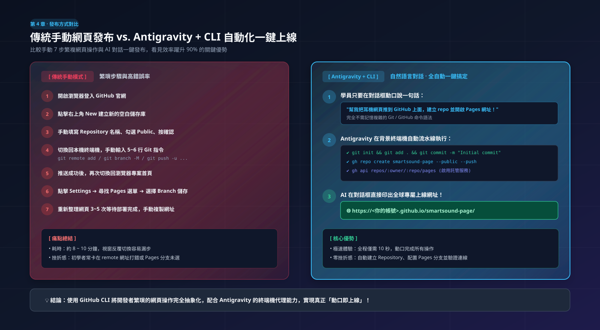
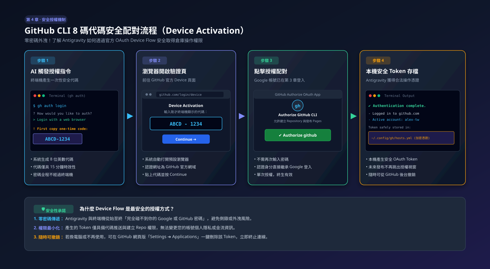
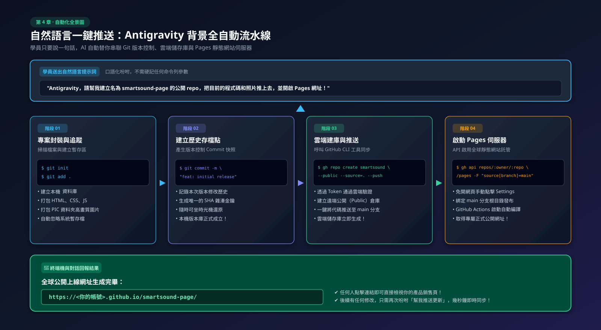

使用 GitHub CLI 幫學生自動發布作品並生成公開網址
不用再開瀏覽器手動點選 New Repository、手動上傳拖曳檔案！本章將教你如何使用 GitHub 官方命令列工具（GitHub CLI, gh），或是直接吩咐 Antigravity，一鍵完成雲端部署並獲取專屬網址！
4-1 為什麼需要 GitHub CLI (gh)？
傳統手動做法需要：開啟 GitHub 網頁 ➔ 點擊 New Repo ➔ 打名字 ➔ 電腦下指令 ➔ 回網頁點 Settings ➔ 找 Pages 選單 ➔ 點 Save... 步驟繁瑣且容易出錯。
GitHub CLI (gh) 是 GitHub 官方打造的命令列工具。更棒的是，因為 Antigravity 擁有終端機操作能力，你甚至不需要自己安裝或打複雜指令，只要用說的，AI 就能幫你從頭安裝到尾！

告別網頁切換與 7 步繁瑣操作，Antigravity 結合 GitHub CLI 實現 10 秒自然語言自動上線！
4-2 動口不動手：下指令請 Antigravity 幫我們安裝 GitHub CLI
學員不需要去官網翻找下載頁面，只要在 Antigravity 對話框送出以下提示詞：
💡 Antigravity 會在背景替你執行的動作：
- 執行
gh --version檢查現有版本。 - 若未安裝，Windows 自動執行
winget install --id GitHub.cli；macOS 自動執行brew install gh。 - 回報安裝成功訊息，提示已就緒。
4-3 關鍵環節：Antigravity 是如何取得你的 GitHub 帳號資格的？
很多學員會好奇：「Antigravity 怎麼知道我是誰？它怎麼能把東西推到我的 GitHub？」
這裡涉及到安全授權機制（OAuth 網頁驗證），請注意：Antigravity 本身不會也不應該知道你的密碼，而是透過官方的網頁單次配對：
只需執行一次的網頁授權（Device Flow）
請對 Antigravity 說："請幫我啟動 GitHub CLI 的登入驗證"，或者你在終端機執行 gh auth login：
gh auth login② 終端機會顯示一組 8 碼配對代碼： 例如
ABCD-1234③ 系統會彈出預設瀏覽器（或是點擊終端機連結）： 連到 GitHub 的 Device Activation 頁面
④ 貼上代碼並按 Authorize： 因為學員在第 3 章已經用 Google 登入過 GitHub，瀏覽器會一鍵確認授權！
✔ 授權成功後，GitHub CLI 會在學員電腦本機生成一個安全的憑證 Token（安全金鑰）。從此以後，Antigravity 在呼叫 gh 工具時，就能合法代表你的身份操作遠端倉庫！

密碼零外洩！解密一次性網頁配對原理與本機加密 Token 安全存儲機制。
4-4 推送時的 Repo 名稱：由 AI 決定還是我們自己設定？
答案是：兩種都可以！而且完全取決於你在對話中怎麼說。
特點： 你能精確掌控網址外觀，不會出現預料之外的名稱。
範例提示詞： 「請把專案推送到名為 my-earphone-landing 的 GitHub public repo...」
產生的網址： https://<帳號>.github.io/my-earphone-landing/
特點： 適合不想花腦筋想英文名稱的學員。
運作原理： AI 會預設使用「目前資料夾名稱」或分析網頁標題（如 smartsound-pro）。
範例提示詞： 「請幫我取一個合適簡短的英文名稱建立 Repo 並推上去...」
4-5 自然語言口語化一鍵推送：自動產生公開可用網址
當 GitHub CLI 安裝完成且一次性授權通過後，日常開發中學員只要用最輕鬆的口語對 Antigravity 說話即可：
🎉 成果回報：學員會收到的結果
Antigravity 執行完指令後，會在對話框向你回報：
https://github.com/alex-tw/smartsound-page✅ GitHub Pages 服務已啟動！
🌐 公開瀏覽網址： https://alex-tw.github.io/smartsound-page/
（註：首次發布約需等待 1~2 分鐘供 GitHub 雲端完成快取建置，稍後刷新即可正常瀏覽）

完整拆解「封裝追蹤 ➔ 存檔快照 ➔ 雲端建庫推送 ➔ 啟動 Pages」的 AI 後台 4 階段全自動工作鏈！